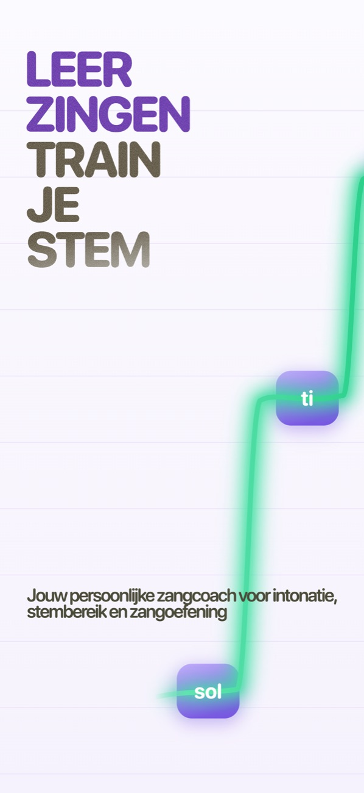
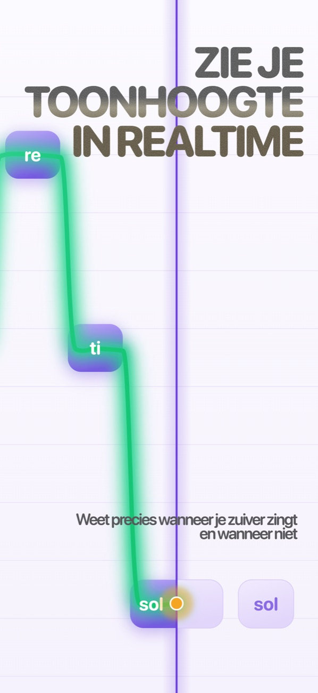
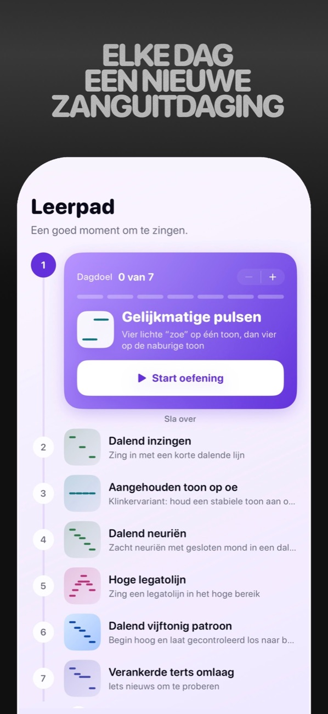
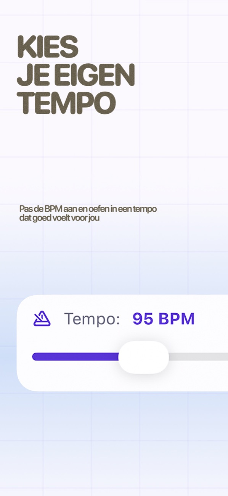

Focusoefening
Canu licht de plek eruit waar je vastloopt, geeft je aanlooptonen en laat je daarna de hele oefening opnieuw zingen.
Canu is je persoonlijke zangcoach. Leer tonen zeker te raken, ontwikkel je stem en zing met meer zelfvertrouwen. Stap voor stap.
Canu licht de plek eruit waar je vastloopt, geeft je aanlooptonen en laat je daarna de hele oefening opnieuw zingen.
Zie welke toon je zingt en hoe zeker je hem raakt.
Meet je stembereik live en ontdek je stemtype.
Begin met twee opwarmoefeningen en bouw een vaste routine op met wisselende oefeningen.
Zie na elke oefening wat beter ging en welke passage je hierna oefent.
Stel toonladders en toonreeksen samen, kies tonen en tempo en bewaar ze. Canu Boogie zit erbij als kant-en-klaar voorbeeld om aan te passen.
Je oefenweek op een notenbalk, met oefenminuten per dag.
Intonatie, gehoortraining, wendbaarheid, articulatie, adembeheersing en meer.
Pas de BPM aan om een moeilijke oefening te vertragen of het tempo stap voor stap op te voeren.
Kies de weergave die bij je past of laat die automatisch wisselen.




Je stem ontwikkelt zich door te oefenen.
Beschrijf kort je vraag. We reageren zo snel mogelijk en gebruiken je gegevens alleen om je verzoek af te handelen.
Zodat we kunnen helpen: vermeld apparaat, iOS-versie, appversie en een korte beschrijving van het probleem. Een schermafbeelding helpt vaak.
Canu heeft toegang tot de microfoon nodig. Sta dit toe in de iPhone-instellingen onder Canu. Oefen in een rustige ruimte en houd de microfoon vrij.
Canu neemt alleen op als je opnemen inschakelt. Opnames blijven op je apparaat en je kunt ze in de app verwijderen. Beluisteren, vergelijken, bewaren en delen horen bij Canu Pro.
Aankopen lopen via je Apple ID. Tik op het Pro-scherm in Canu op ‘Herstel abonnement’. Je beheert en beëindigt het abonnement in de instellingen van je Apple ID.
Alleen met jouw toestemming: gebruiksgegevens gaan naar Google Analytics en foutrapporten naar Firebase Crashlytics. Je zet ze afzonderlijk uit in de instellingen van Canu, met ‘Gebruiksgegevens delen’ en ‘Foutrapporten delen’. Audio wordt niet verzonden.
Kies de regio waarin je Canu gebruikt.